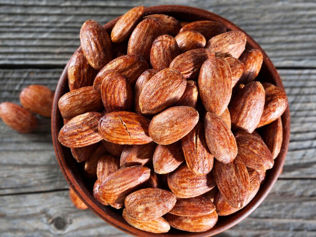

Smoked Almonds

How to smoke almonds could not be easier with this recipe!
Smoked almonds are one of those addictive snacks that are dangerous to put on the table.
These taste so good and are incredibly simple to make.
Ingredients
- 1 pound almonds, raw
- 2 tbsp olive oil
- 1 tbsp salt
- 1 tsp garlic powder
- 1/2 tsp cayenne pepper
Steps
- Set up smoker for 225F
- Mix together the olive oil, salt, garlic powder and cayenne pepper in a medium sized bowl. Stir in the almonds ensuring they are evenly coated.
- Spread almonds evenly across pan.
- Smoke for about 2 hours.
- Let the almonds cool completely and come to room temperature before serving.